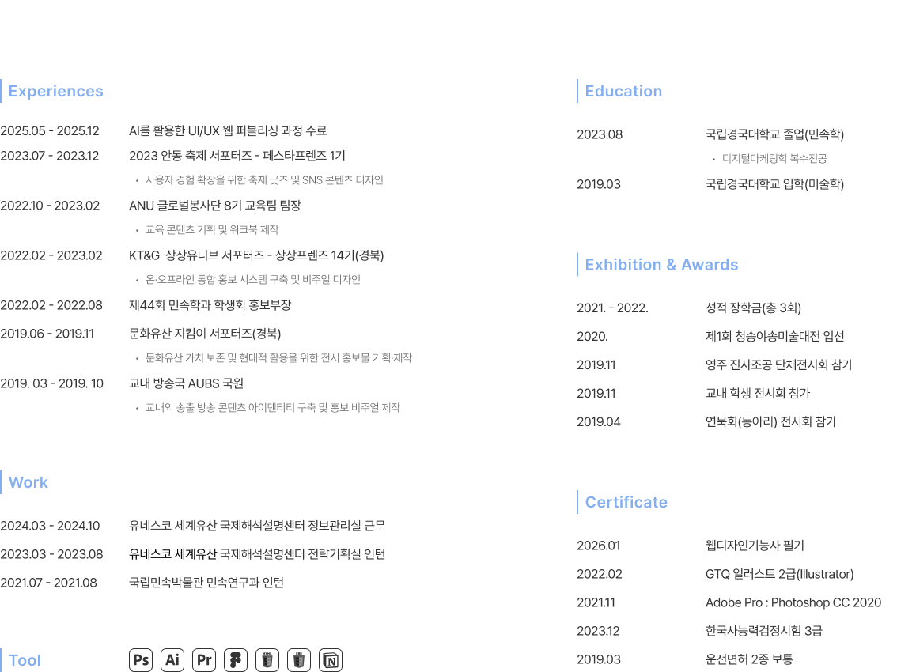

JUNHWA LEE
형태는 자유롭지만, 흐름은 끊기지 않게.
사용자의 경험이 자연스럽게 이어지도록 설계합니다.
Fluid in form, seamless in flow.
Crafting experiences that drift naturally into the user's journey.
About.
이준화 | JunHwa LEE
2000.01.28
010-5606-5659
eeeljun@gmail.com

Project.